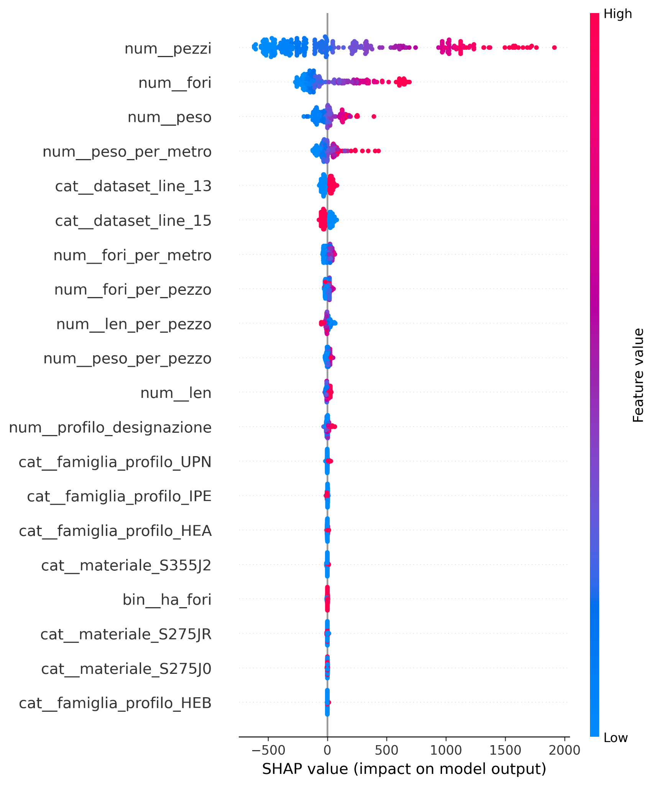

01 / MACHINE LEARNING / INDUSTRY
Predicting Industrial Processing Times
An end-to-end Machine Learning project focused on estimating machine processing times from structural and operational data, from model comparison and explainability to deployment on a Linux server.
Overview
In production environments, processing-time estimates directly affect planning, scheduling, and the ability to provide reliable expectations to downstream processes. The objective of this project was to use historical structural and operational information to predict machine processing times more consistently than a purely manual or rule-based estimation approach.
The work covered the full ML lifecycle: data preparation, model comparison, validation, model explainability, API development, containerization, and deployment.
Approach
Prepare the data
Organize structural and operational features, engineer useful predictors, handle preprocessing, and define reliable train and validation splits.
Compare regression models
Evaluate multiple regression approaches, including tree-based and boosting methods, rather than assuming a single algorithm would work best.
Evaluate and explain the predictions
Measure prediction quality with MAE, RMSE, R², and MAPE, inspect predicted-versus-actual behavior, and use SHAP to understand how input features influence the output.
Move beyond the notebook
Expose the selected prediction workflow through FastAPI, containerize the application with Docker, and deploy it on a Linux server so it could be integrated into other systems.
Validation results
The validation metrics show that the model captures most of the variability in processing time while keeping the average percentage error at roughly eight percent.
For comparison, the training set reached R² = 0.975, MAPE = 4.62%, MAE = 52.1 s, and RMSE = 98.4 s. The drop from training to validation is visible, but the validation performance remains strong.
Predicted vs. actual processing time
The scatter plot below shows Random Forest predictions on the validation set against the observed processing times. The dashed diagonal represents perfect predictions: most points remain close to this reference line, while the dispersion becomes larger for some of the longest processing times.

Model explainability with SHAP
Accuracy alone was not enough for an industrial use case. I also used SHAP values to understand how individual input features push the predicted processing time upward or downward.

What I worked on
- Regression modeling on industrial process data.
- Feature engineering from structural and operational information.
- Comparison of multiple model families, including tree-based and boosting approaches.
- Evaluation using MAE, RMSE, R², MAPE, residual behavior, and validation plots.
- Model interpretation using SHAP.
- API design with FastAPI, containerization with Docker, and deployment in a Linux environment.
The key learning was that a useful ML project is not only about selecting an accurate model. It is about building the full path from operational data to a prediction that is measurable, explainable, and usable inside a real process.